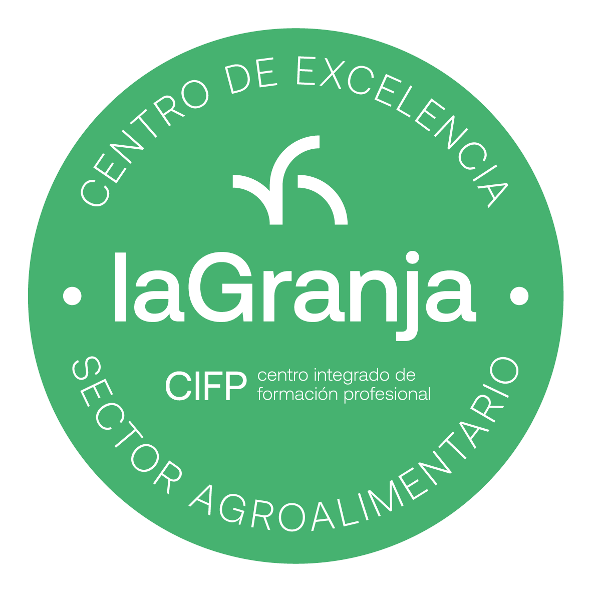

Noticiario La Granja
Agricultura, ganadería, forestal y alimentación · CIFP, Cantabria y España
Todas
CIFP La Granja
Cantabria
Nacional
Área:
Todas las áreas
Cargando noticias…
Suscribirse por RSS
Ver más noticias